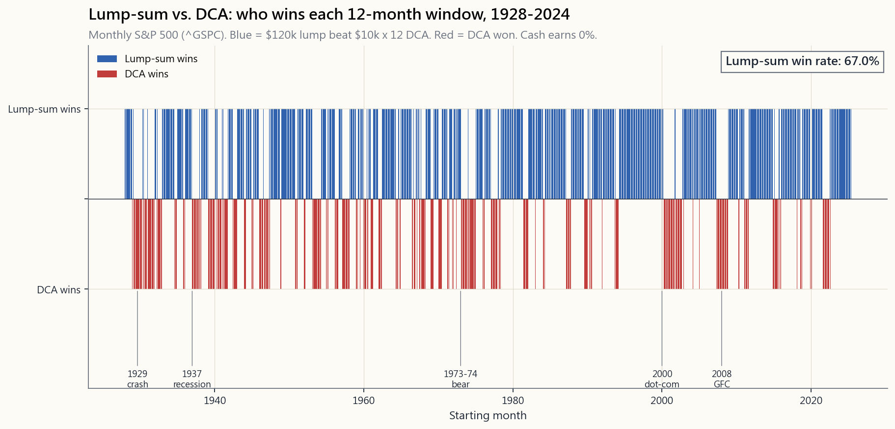
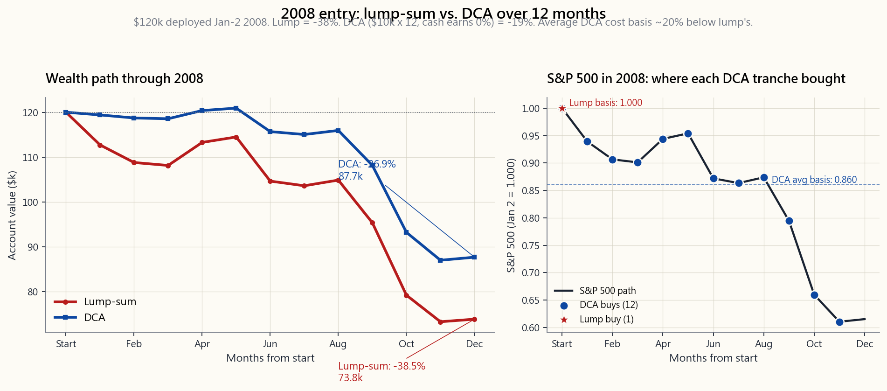

Side Lesson 05: DCA vs. Lump Sum — The Math, the Behavior, and When Each Wins
1. Why This Is Important
Sooner or later every investor stares at a pile of cash and asks the same question: put it all in at once, or spread it out? An inheritance lands. A bonus arrives. A house sells. A 401(k) rolls over. The cash sits in a money-market fund earning 4.2% and the question gets sharper every Monday morning.
This is one of the few corners of investing where the textbook answer and the human answer genuinely diverge. The mathematics are unambiguous: lump sum wins about two-thirds of the time over the following twelve months, and the long-run expected terminal wealth is higher. The behavioural picture is just as clear: dollar-cost averaging into the market lowers regret variance, reduces the probability of buying right at the top, and — most importantly — helps the cash actually get invested instead of sitting on the sidelines for three more years waiting for "a better time."
Four reasons this lesson earns a slot:
salaried worker contributing from each paycheck, you are already doing forced DCA — that is the only option you have. The lump-vs-DCA question only really applies to windfalls.
Cash on the sidelines is not a third strategy; it is a failure to choose between the first two.
investors for life** — 2000-2002 and 2008. That bias toward nightmare scenarios is exactly why the behavioural story matters.
panics out at the bottom has already lost. DCA is the rational behavioural hedge that keeps the irrational version of you solvent.
2. What You Need to Know
2.1 Defining the Two Strategies Cleanly
Lump sum (LSI). You receive $120,000. On day one, you buy your target allocation in full. Day two onward, you do nothing.
Dollar-cost averaging (DCA). You receive $120,000. You divide it into equal slices — $10,000 a month for twelve months is the canonical version — and buy the target allocation slice by slice on a fixed schedule. The cash not yet invested earns money-market yield (currently around 4.2% on T-bills, April 2026).
What DCA is not. Putting $1,000 of every paycheck into your 401(k) is systematic investing, not DCA. You do not have a lump sum to deploy; you have a steady drip of new income. The lump-vs-DCA question genuinely does not apply. Calling paycheck-investing "dollar-cost averaging" is a marketing trope from the mutual-fund industry — useful as a sales line, useless as a decision framework. And while we are here: the 401(k) drip is the cleanest proof that there is no truly passive income — the input, the bit you scraped out of the paycheck before you ever got to the timing question, is doing all the work. The schedule is automatic; the saving was not.
The problem this lesson addresses is narrow:
*I have a sum of money I am ready to invest, today, in my target allocation. Should I buy it all on Monday, or split the purchase across N months?*
2.2 The Math: Lump Sum Wins on Expected Value
If your expected return on the target allocation is positive — which it has to be, otherwise why are you investing at all — then the expected terminal wealth from lump sum is strictly higher than the expected terminal wealth from DCA. The proof is one line:
$$ \mathbb{E}[\text{LSI}] = P (1 + \mu)^N \quad > \quad \mathbb{E}[\text{DCA}] = \frac{P}{N} \sum_{k=1}^{N} (1 + \mu)^{N-k+1} $$
For positive $\mu$, every dollar deployed earlier compounds for longer. DCA holds half the money in cash on average over the deploy window; that half earns the cash rate, not the equity rate. The spread between the equity expected return (~7-9% nominal) and the cash rate (~4%) is the cost of DCA on the average outcome.
How big is the cost in dollars? On $120,000 deployed over 12 months into a 60/40 portfolio (expected ~6.5% over cash), DCA gives up roughly 0.5-0.7% of terminal wealth in expectation, or about $600-$850 on $120k. Small in absolute dollars, but it compounds forever — that gap never closes.

2.3 The Empirical Record: ~67% Lump-Sum Wins
The Vanguard 2012 study (Shtekhman, Tasopoulos, and Wimmer) ran the trade in three markets — the US 1926-2011, the UK, and Australia — and found lump sum beat 12-month DCA in about two-thirds of all rolling 12-month windows. The exact print depends on the asset mix:
| Allocation | LSI win rate | Average outperformance |
|---|---|---|
| 100% stocks | 66% | +2.4% |
| 60/40 | 67% | +2.3% |
| 100% bonds | 70% | +1.6% |
The 2023 Vanguard refresh (Aliaga-Diaz et al, *Cost Averaging: An Analysis...*) using 1976-2022 data confirmed the same range. The result is robust across the bond-heavy 1980s, the equity boom of the 1990s, the 2000s lost decade, and the post-2010 bull. It does not go away.
The win rate is not 100% for an obvious reason: a third of all 12-month windows in market history go down, and in down markets DCA — by holding cash longer — loses less. This is just the mirror image of the expected-value argument. Lump sum has higher mean outcome because it has higher variance of outcome. DCA truncates the left tail by holding cash; in exchange it truncates the right tail too.
2.4 The 33% Where DCA Wins: The Nightmare Calendar
The third of the time DCA wins is not random. It clusters tightly around the worst entry points in market history:
- 1929-1932. Lump in October 1929 = -68% terminal wealth at end
- 1937-1938. Roosevelt recession; lump-sum -38% in 12 months.
- 1973-1974. Stagflation bear; -42% lump vs. -22% DCA.
- 2000-2002. Dot-com unwind; lump entries in early 2000 finished
- 2008. This is the one investors remember. **Jan 2008 lump =

The math is straightforward: by buying in twelfths, the DCA investor purchases the last $10k tranche in December 2008 at prices about 40% below the January starting point. Their average cost basis is roughly 20% below the lump-sum investor's. When the recovery begins in March 2009, the DCA investor recovers to break-even faster.
That said: even DCA-2008 was painful. The DCA investor still finished 2008 down somewhere between 19% (with T-bill yield on idle cash) and 27% (with cash yielding zero) on paper. Both strategies recovered by 2012-13 in nominal terms (longer in real). Neither one avoided the bear market; one merely softened it.
2.5 The Behavioural Case for DCA — Regret Variance
Pure expected-utility theory says lump sum wins. Behavioural finance, which actually models how humans experience outcomes, adds two terms the textbook leaves out:
the position drop 30% is felt asymmetrically — far more painfully than the corresponding pleasure of buying at the bottom and watching it rise 30%. Loss aversion has been measured at roughly 2:1 — Kahneman & Tversky's number — meaning the felt cost of being wrong is twice the felt benefit of being right.
$120,000 mark down to $90,000 in three months will, in many cases, sell — locking in the loss precisely when DCA would still be buying. The behavioural failure mode is not the strategy; it is the strategy being abandoned at the worst possible moment.
DCA is a rational hedge against the irrational version of yourself. The expected-value cost of 0.5-0.7% terminal wealth is the premium you pay so that the version of you in March 2009 is still in the market at all. Say it again: irrational and solvent beats rational and bankrupt.
If you can honestly say you are the kind of investor who would not panic out of a 30% lump-sum drawdown — and Week 11 has the data on how few people actually pass that test — go lump. If you have any doubt, the 0.6% expected-value cost of DCA is a cheap insurance policy on your own future behaviour.
2.6 The Real Anti-Pattern: Cash on the Sidelines
The serious failure mode is not lump-vs-DCA. It is neither. The median retail investor with a windfall does not lump or DCA — they sit on the cash for 18-36 months, waiting for "a better entry." Then the market goes up another 30% during the wait. Then they decide the market is "too high." Then they wait some more.
The Vanguard 2012 paper makes this point in a single number: cash underperforms a 60/40 portfolio over rolling 12-month windows roughly 67% of the time — the same number as lump-vs-DCA — but with a much wider spread. Holding cash for a year while waiting for the dip costs about 4% of terminal wealth in expectation, and that cost compounds while you procrastinate.
A note on what you are lumping into. For the reader this lesson is written for — first portfolio, apprenticeship phase — the target allocation on the receiving end of the lump is SPY (or the equivalent broad-US-equity index ETF), not a barbell of cash, gold, and option structures. The barbell is the shape I run today, but it earns its keep only after you have internalised the regime thesis and built the toolkit the speculative end demands. Skip the apprenticeship and you have dropped the index core for nothing on one side and a sleeve you cannot operate on the other. Lump into the index, do the apprenticeship, then migrate the shape — in that order.
The decision framework is:
timing question.
richer 2/3 of the time and richer in expectation always.
cost in exchange for behavioural stability. Set the schedule on day one and do not adjust it based on market moves.
market settles" is not a strategy. It is procrastination wearing a financial-advisor costume.
2.7 Practical Rules — If You Are Going to DCA, Do It Right
If you choose DCA, three rules make it work:
$10k on the first business day of each month for N months. Set it as a recurring transfer. Do not let yourself "skip" months when prices look high or "double up" when prices look low — that is market timing dressed as DCA, and it has an even worse track record than either pure approach.
months and the cash drag dominates — you are mostly just holding cash. Shorter than 3 months and you might as well lump.
year from 1928 to 2024** with any deployment window from 3 to 24 months. Try the bad ones — Jan 1973, Oct 1987, Jan 2000, Jan 2008. Try the good ones — Jan 1995, Jan 2009, Jan 2020. The pattern is exactly what the math says: lump usually wins, DCA wins in the disasters, and the disasters cluster.
The interactive panel gives you the full backtest. The two static images above tell the same story in compressed form: the empirical win-rate over a century of monthly starts, and the iconic 2008 playbook where DCA's behavioural value showed up.
3. Common Misconceptions
1. "DCA reduces risk." It reduces deployment-window risk only. Once you are fully deployed at month 12, you hold the same risk as the lump-sum investor. DCA is a transition strategy, not a portfolio strategy.
2. "DCA gives you a lower average cost." Only in down markets. In up markets — which is two-thirds of all 12-month windows — DCA gives you a higher average cost than buying everything at the start.
3. "Spreading purchases across the year smooths out volatility." The volatility of your terminal wealth at 12 months is lower under DCA, but only by roughly 30%. It is not zero. The strategy is more dampened, not insulated.
4. "I'll do half lump, half DCA." This is a reasonable hedge that captures most of the behavioural benefit of DCA at half the expected cost. Vanguard's data has a 50/50 hybrid landing roughly midway between the pure strategies on both expected return and regret.
5. "DCA works because of buying more shares when prices are low." This is the standard sales pitch, and it is true only when the average price over the deploy window is below the starting price — i.e., in a falling market. It is not a magic property; it is just the arithmetic of buying low.
6. "I should DCA my paycheck contributions." Your paycheck contributions are already DCA — they have to be, because the income arrives in pieces. You are not choosing to DCA; you have no lump sum to deploy. The lump-vs-DCA question genuinely does not apply to systematic 401(k) contributions.
7. "Waiting for a better entry is the same as DCA." It is not. DCA is a fixed schedule, decided in advance, executed mechanically. Waiting for a dip is discretionary market timing — by far the worst-performing of all three approaches in every rolling-window study ever run.
8. "If lump sum wins on expected value, I should always lump." Only if you are confident that the behavioural version of you will not abandon the strategy in a drawdown. That is a much higher bar than most investors realise. The 0.6% expected-value cost of DCA buys behavioural insurance — sometimes worth it, sometimes not.
4. Q&A
Q1: What is the exact win rate for lump sum versus DCA?
About 67% over rolling 12-month windows in US data 1928-2024, deploying into either 100% stocks or a 60/40 portfolio. The Vanguard 2012 paper reported 66-67% across US/UK/Australia; the 2023 update reconfirmed it on 1976-2022 data.
Q2: How much does lump sum outperform on average?
About 2.3% of terminal wealth over the 12-month deploy window under a 60/40 portfolio. In dollar terms, that is roughly $2,300 on $100,000 deployed, persisting forever as a level shift in the account balance.
Q3: What is the worst case for lump sum?
January 1929 lump entry: terminal wealth at end of year 1 was around -68% of starting capital after the late-1929 crash. Even splitting across 12 months would not have saved you fully — that is a 30% loss instead of a 60% loss. The bigger lesson from 1929 is about leverage and concentration, not lump-vs-DCA.
Q4: What if my windfall is huge — say, $5 million?
The math is identical at every scale. The behavioural concerns are worse — a 30% drawdown on $5M feels very different from a 30% drawdown on $50k. For large windfalls, a longer DCA window (18-24 months) is more defensible specifically as behavioural insurance, even though the expected-value cost is higher. Most private banks default to 6-12 month deployment plans for exactly this reason.
Q5: Should I use VWAP or fixed-date scheduling?
Fixed-date. The first business day of each month is the standard. VWAP-style "price-aware" deployment turns DCA into a market-timing exercise, which is exactly what DCA was supposed to protect you from.
*Q6: What about deploying out* of the market — should I lump-sell or DCA-sell?**
Symmetric math: lump-selling has higher expected value (your cash earns less than your equity exposure on average), DCA-selling has lower regret variance. The behavioural calculus is reversed though, because the default state (holding) is the risky state when you are trying to de-risk. Most retirees choose DCA-out for the same behavioural reasons others choose DCA-in.
Q7: Does the answer change for international stocks or bonds?
Lump still wins on expected value because the expected return is positive. The win rate is slightly lower for assets with lower expected returns over cash — for 100% bonds it was about 70% in Vanguard's data, for 100% stocks about 66%. Higher-return assets have a wider spread between the equity rate and cash, so the magnitude of lump's win is bigger.
Q8: How does this interact with tax?
Lump-sum starts the holding-period clock for long-term capital gains treatment 12 months earlier on the entire position. For taxable accounts that matters: if you sell after 13 months, lump's gains are all LTCG; DCA has roughly half the position still at short-term rates. Long-term-gains treatment is the cheapest free money in US tax law, and lump grabs it earlier.
Q9: Is "DCA out of cash that I had been waiting with" a thing?
It is what most people actually do, and it is fine. It is just late DCA. The cost is the months you spent in cash before starting the deployment plan. Start the plan, follow it, and stop the "waiting for a better entry" loop.
Q10: What does the interactive lab show me?
Pick an amount, a DCA window (3 / 6 / 12 / 24 months), and a start year (1928 to 2024). The lab runs the backtest using monthly returns derived from the Damodaran annual dataset and reports four numbers: lump-sum terminal wealth, DCA terminal wealth, the dollar difference, and the maximum drawdown that occurred during the deployment window. Pick start years that match the disasters in this lesson — 1929, 1973, 2000, 2008 — and watch the only times DCA actually wins line up exactly with where the textbooks said they would.
旁支課程 05：平均成本法對比一次過投入——數學、行為，以及各自勝出的時機
1. 為何此課題重要
每個投資者遲早都會盯著一筆現金，問同一個問題：是一次過全部投入，還是分批部署？ 可能是一筆遺產、一份花紅、一個物業出售所得，或者是一個退休帳戶的轉存。現金就躺在貨幣市場基金裡，賺著4.2%的回報，而這個問題每逢周一早上都變得更加迫切。
這是投資界中，教科書答案與人性答案真正出現分歧的少數議題之一。數學結論毫不含糊：一次過投入（Lump Sum）在隨後十二個月約有三分之二的時間勝出，而且長期預期終值更高。行為層面的結論同樣清晰：平均成本法進場可降低後悔的波動性，減少恰好在頂部買入的概率，而且最重要的是——它有助於現金真正被投資出去，而非再在場邊多等三年，等候「更好的時機」。
此課題值得單獨一課，有四個原因：
2. 你需要掌握的內容
2.1 清晰定義兩種策略
一次過投入（LSI）。 你收到$120,000。在第一天，你按目標配置全額買入。第二天起，你甚麼都不做。
平均成本法（DCA）。 你收到$120,000。你將其分成等份——以每月$10,000、分十二個月為標準版本——並按固定時間表逐批買入目標配置。尚未投資的現金賺取貨幣市場回報（以2026年4月計，短期國債現行收益率約為4.2%）。
平均成本法不是甚麼。 每次出糧後將$1,000存入強積金或退休帳戶，是系統性投資，而非平均成本法。你並沒有一筆待部署的整筆資金；你只是持續獲得穩定收入的涓涓細流。一次過投入對比平均成本法的問題，根本不適用。將出糧供款稱為「平均成本法」，是互惠基金行業的一種銷售說辭——作為推廣語言有用，作為決策框架卻無用。在此附帶一提：出糧供款正是最有力的明證，說明沒有真正的被動收入——輸入，即你在進入時機問題之前就從薪金中擠出來的那一份，才是做所有工作的關鍵。時間表是自動的；儲蓄的行為並非如此。
此課題所針對的問題是具體的：
我現在有一筆錢，準備按目標配置投資。我應該在周一全部買入，還是將購買分攤到N個月？
2.2 數學：一次過投入在預期值上勝出
如果你的目標配置的預期回報是正數——這是必然的，否則你為何要投資——那麼一次過投入的預期終值嚴格高於平均成本法的預期終值。證明只需一行：
$$ \mathbb{E}[\text{LSI}] = P (1 + \mu)^N \quad > \quad \mathbb{E}[\text{DCA}] = \frac{P}{N} \sum_{k=1}^{N} (1 + \mu)^{N-k+1} $$
在$\mu$為正數的情況下，越早部署的每一元複利時間越長。平均成本法在部署期間平均持有一半現金；那一半賺的是現金利率，而非股票回報率。股票預期回報（約7-9%名義回報）與現金利率（約4%）之間的差距，就是平均成本法在平均結果上的成本。
這個成本以金額計算有多大？將$120,000在12個月內部署到一個60/40投資組合（預期超出現金利率約6.5%），平均成本法放棄的終值大約為0.5-0.7%，即$120,000上約$600至$850。金額本身不算大，但它會永遠複利增長——這個差距永不收窄。
2.3 歷史實證：約67%時間一次過投入勝出
先鋒集團（Vanguard）2012年的研究（Shtekhman、Tasopoulos及Wimmer）在三個市場進行了測試——美國1926至2011年、英國及澳洲——發現一次過投入在約三分之二的12個月滾動視窗中，均勝過12個月的平均成本法。確切數字因資產組合而異：
| 配置 | 一次過投入勝率 | 平均跑贏幅度 |
|---|---|---|
| 100%股票 | 66% | +2.4% |
| 60/40 | 67% | +2.3% |
| 100%債券 | 70% | +1.6% |
先鋒集團2023年的更新研究（Aliaga-Diaz等人，《成本平均法：一項分析……》），使用1976至2022年數據，確認了相同的範圍。這一結論在債券主導的1980年代、1990年代股票大牛市、2000年代失落的十年，以及2010年後的牛市中均保持穩健，並未消失。
勝率不是100%，原因顯而易見：市場歷史上三分之一的12個月視窗是下跌的，而在下跌市場中，平均成本法通過持有更長時間的現金，損失較少。這只是預期值論點的鏡像。一次過投入擁有更高的平均結果，是因為它擁有更高的結果波動性。平均成本法通過持有現金截斷了左尾；作為代價，它同時截斷了右尾。
2.4 平均成本法勝出的33%：噩夢時間表
平均成本法勝出的三分之一時間並非隨機。它緊密地聚集在市場歷史上最糟糕的入場時機附近：
- 1929至1932年。 1929年10月一次過投入：年末終值約為起始資本的-68%；平均成本法將損失分攤在整個崩盤期間，最終損失遠少。
- 1937至1938年。 羅斯福衰退；一次過投入12個月虧損-38%。
- 1973至1974年。 滯脹熊市；一次過投入-42%，平均成本法-22%。
- 2000至2002年。 科網股泡沫爆破；2000年初的一次過投入在12個月後損失-25%。
- 2008年。 這是投資者最難忘的一年。2008年1月一次過投入 = 年底損失-38%。2008年1月平均成本法 = 年底損失-27%（閒置現金收益率為0%；若閒置現金能賺取國債利率，則更接近-19%，與先鋒集團原始研究的假設一致）。
數學直截了當：通過分十二份買入，平均成本法的投資者在2008年12月，以約低於1月起始點40%的價格，買入最後$10,000的份額。其平均成本基礎大約比一次過投入的投資者低20%。當2009年3月復甦開始時，平均成本法的投資者能更快回到收支平衡點。
話雖如此：即便是2008年的平均成本法，也是痛苦的。平均成本法的投資者在賬面上仍於2008年底錄得介乎19%（閒置現金賺取國債收益率的情況下）至27%（現金收益率為零的情況下）的損失。兩種策略均在名義上於2012至2013年收復失地（實際計算則更長）。兩種策略都未能避開熊市；只是其中一種將衝擊有所緩和。
2.5 平均成本法的行為理由——後悔波動性
純粹的預期效用理論表明一次過投入勝出。行為金融學，即真正模擬人類如何體驗結果的學科，額外加入了兩個教科書所忽略的項目：
平均成本法是對未來非理性版本自己的理性對沖。約0.5-0.7%終值的預期成本，是你為確保2009年3月的那個版本的自己仍然留在市場中所付出的保費。再說一遍：非理性且有償付能力，勝過理性卻已破產。
如果你能誠實地說，自己是那種即便一次過投入後遭遇30%的賬面跌幅也不會恐慌離場的投資者——第11週的數據顯示，真正能通過這一測試的人少之又少——那就選一次過投入。如果你有任何懷疑，平均成本法約0.6%預期成本的損耗，是為你未來行為購買的廉價保險。
2.6 真正的反面模式：現金在場邊等候
嚴重的失敗模式不是一次過投入對比平均成本法的抉擇，而是兩者都不選。持有橫財的普通散戶，不會選一次過投入，也不會選平均成本法——他們讓現金在場邊等待18至36個月，等待「更好的入場時機」。然後市場在等待期間再上漲30%。然後他們認為市場「太高了」。然後他們繼續等待。
先鋒集團2012年的研究以一個數字說明了這一點：現金在12個月滾動視窗內跑輸60/40投資組合的概率約為67%——與一次過投入對比平均成本法的比率相同——但差距幅度更大。等待一年等待跌市，在預期上損耗約4%的終值，而且這個成本在你猶豫不決的同時持續複利增長。
這裡值得特別說明你在一次過投入時所選擇的標的。對於此課題面向的讀者——建立第一個投資組合、處於學徒階段——一次過投入所承接的目標配置是SPY（或同等的美國廣泛股票指數交易所買賣基金），而不是現金、黃金加期權結構的啞鈴組合。啞鈴型是我如今採用的形態，但它只有在你已內化了機制論點並建立了投機端所需工具包之後，才能物有所值。跳過學徒階段，你就只是白白放棄了指數核心，同時持有一個你根本不懂操作的倉位。先一次過投入指數，做好學徒功夫，再考慮轉換形態——按這個順序。
決策框架如下：
2.7 實用守則——如果你選擇平均成本法，就做好它
如果你選擇平均成本法，三條守則讓它發揮效用：
互動面板提供完整的回測。上方兩幅靜態圖像以壓縮形式講述同一個故事：百年間每月起始點的歷史勝率，以及平均成本法的行為價值在2008年這個標誌性的年份如何呈現。
3. 常見誤解
1. 「平均成本法降低風險。」 它只降低部署期間的風險。一旦你在第12個月完成全部部署，你所承擔的風險與一次過投入的投資者相同。平均成本法是一種過渡策略，而非投資組合策略。
2. 「平均成本法讓你的平均成本更低。」 只在下跌市場才成立。在上漲市場——即所有12個月視窗中的三分之二——平均成本法讓你的平均成本反而高於從一開始就全部買入。
3. 「分攤全年的買入可以平滑波動性。」 你在12個月後的終值波動性在平均成本法下確實較低，但只是低約30%，並非為零。策略是更為緩衝的，而非隔絕的。
4. 「我各投一半，一半一次過投入，一半平均成本法。」 這是合理的對沖，以一半的預期成本捕獲大部分平均成本法的行為收益。先鋒集團的數據顯示，50/50的混合策略在預期回報和後悔程度上，大致介乎兩種純粹策略之間。
5. 「平均成本法奏效，因為在低價時買入更多份額。」 這是標準的推廣說辭，只有當部署期間的平均價格低於起始價格時才成立——即在下跌市場中。這並非神奇的特性；只是低價買入的算術。
6. 「我應該對出糧供款採用平均成本法。」 你的出糧供款本來就是平均成本法——因為收入是分批到來的，别無他法。你不是在選擇做平均成本法；你根本沒有整筆資金可供部署。一次過投入對比平均成本法的問題，真的不適用於系統性的強積金供款。
7. 「等待更好的入場時機與平均成本法一樣。」 不一樣。平均成本法是提前決定、機械執行的固定時間表。等待跌市是主動的市場擇時——在所有曾做過的滾動視窗研究中，遠遠是三種方法中表現最差的一種。
8. 「如果一次過投入在預期值上勝出，我就應該永遠選一次過投入。」 只有當你確信，處於回撤中的行為版本的你不會放棄這個策略時，才應如此。這是一個比大多數投資者意識到的更高的門檻。平均成本法約0.6%的預期成本，購買的是行為保險——有時值得，有時不值得。
4. 問與答
問1：一次過投入對比平均成本法的確切勝率是多少？
在1928至2024年美國數據的12個月滾動視窗中，無論是投入100%股票還是60/40投資組合，勝率約為67%。先鋒集團2012年的研究在美國、英國及澳洲均錄得66至67%的勝率；2023年的更新研究以1976至2022年數據重新確認了這一範圍。
問2：一次過投入平均跑贏多少？
在60/40投資組合下，12個月部署期內約跑贏終值的2.3%。以金額計，即每$100,000部署大約跑贏$2,300，並作為賬戶結餘的一個永久性水平差異持續存在。
問3：一次過投入的最壞情況是甚麼？
1929年1月一次過入場：1929年底部崩盤後，年底終值約為起始資本的-68%。即使分攤到12個月買入，也不能完全倖免——那樣是損失30%而非60%。1929年更深層的教訓是關於槓桿和集中投資，而非一次過投入對比平均成本法。
問4：如果我的橫財非常龐大，例如500萬美元，怎麼辦？
數學在任何規模下都是一樣的。行為層面的憂慮則更為嚴重——$500萬的30%回撤，感覺上與$50,000的30%回撤截然不同。對於大額橫財，較長的平均成本法部署期（18至24個月）純粹作為行為保險，是更有說服力的選擇，儘管預期成本更高。大多數私人銀行預設採用6至12個月的資金部署計劃，原因正是如此。
問5：我應該使用成交量加權平均價還是固定日期時間表？
固定日期。每月第一個工作日是標準做法。以成交量加權平均價為基礎的「價格感知型」部署，會將平均成本法變成市場擇時行為——而這正是平均成本法本應保護你免於犯下的錯誤。
問6：從市場中撤出資金，應該一次過賣出還是分批賣出？
對稱的數學：一次過賣出有更高的預期值（你的現金在平均情況下賺取的比你的股票倉位少），分批賣出有更低的後悔波動性。行為上的計算卻是相反的，因為當你試圖降低風險時，默認狀態（持有）才是高風險狀態。大多數退休人士選擇分批撤出，理由與其他人選擇分批買入的行為理由相同。
問7：對國際股票或債券，答案會有所不同嗎？
一次過投入在預期值上仍然勝出，因為預期回報是正數。對預期超出現金利率較低的資產，勝率略低——先鋒集團的數據顯示，100%債券的勝率約為70%，100%股票約為66%。預期回報較高的資產，股票利率與現金利率的差距更大，因此一次過投入勝出的幅度也更大。
問8：這與稅務有何關係？
一次過投入為整個倉位的長期資本增值稅率持有期，早12個月開始計時。對於應課稅帳戶而言，這一點很重要：如果你在13個月後賣出，一次過投入的收益全部符合長期資本增值稅率；平均成本法則有大約一半的倉位仍按短期稅率計算。長期資本增值稅率是美國稅法中最廉價的免費午餐，而一次過投入能更早鎖定這一優惠。
問9：「從我一直在等待的現金中執行平均成本法」是一回事嗎？
這是大多數人實際上做的事，而且這樣做是可以的。這只是遲來的平均成本法。成本在於你在開始部署計劃之前在現金中等待的那幾個月。現在就開始計劃，嚴格執行，並停止「等待更好入場時機」的循環。
問10：互動實驗室能讓我看到甚麼？
選擇一個金額、一個平均成本法部署期（3、6、12或24個月）以及一個起始年份（1928至2024年）。實驗室使用來自Damodaran年度數據集的每月回報，運行回測，並報告四個數字：一次過投入的終值、平均成本法的終值、金額差異，以及部署期間出現的最大回撤。選擇與此課題中的災難相符的起始年份——1929、1973、2000、2008年——並觀察平均成本法真正勝出的僅有時機，是否與教科書所說的完全吻合。
補充課 05：定期定額 vs. 單筆投入——數學、行為，與各自的勝出時機
1. 為何這堂課不可或缺
每位投資人遲早都會盯著一筆現金，問自己同一個問題：一次全部投入，還是分批進場？ 繼承遺產時、年終獎金入帳時、房子賣掉之後、退休帳戶轉入時。現金停在貨幣市場基金裡賺著 4.2% 的利率，這個問題每個週一早上都更加尖銳。
這是投資領域中少數幾個「教科書答案」與「人性答案」真正分歧的角落。數學很清楚：單筆投入在接下來十二個月約有三分之二的機率勝出，而且長期預期終值更高。行為面同樣清晰：定期定額分批進場能降低遺憾的波動幅度、減少在高點買進的機率，而且最重要的是——它能讓錢真正進場，而不是再等三年「更好的時機」。
這堂課能佔一個席位，有四個原因：
2. 你需要了解的事
2.1 清楚定義兩種策略
單筆投入（LSI）。 你拿到 120,000 美元。第一天，依照目標配置全額買進。第二天之後，什麼都不做。
定期定額（DCA）。 你拿到 120,000 美元。將其分成等額——每月 10,000 美元，分十二個月是標準版本——按固定時間表分批買進目標配置。尚未投入的現金可賺取貨幣市場殖利率（2026 年 4 月，國庫券約 4.2%）。
定期定額不是什麼。 每張薪水撥 1,000 美元進 401(k) 是系統性投資，不是定期定額。你沒有一筆閒置資金需要部署；你只是薪資的細流持續流入。單筆 vs. 定期定額的問題根本不適用。把薪資投資稱為「定期定額」是共同基金業的行銷話術——當業務說詞很管用，作為決策框架毫無意義。順帶一提：401(k) 的每月扣款也是最清楚的證明，說明沒有真正不費力的被動收入——輸入端，也就是你在開口問時機問題之前就從薪水裡省下的那筆錢，才是做所有事的前提。時間表是自動的；儲蓄行為本身卻不是。
這堂課要解決的問題很明確：
我有一筆今天就準備好要投資的錢，要配置到目標資產。我應該週一全部買進，還是分 N 個月分批買？
2.2 數學：單筆投入在期望值上勝出
如果你的目標配置預期報酬為正——這必然如此，否則你為什麼要投資——那麼單筆投入的預期終值嚴格高於定期定額的預期終值。推導只需一行：
$$ \mathbb{E}[\text{LSI}] = P (1 + \mu)^N \quad > \quad \mathbb{E}[\text{DCA}] = \frac{P}{N} \sum_{k=1}^{N} (1 + \mu)^{N-k+1} $$
在 $\mu$ 為正的情況下，每一塊錢越早部署，就複利越久。定期定額在部署期間平均有一半的資金放在現金；那一半賺的是現金利率，而不是股票報酬率。股票預期報酬（約 7-9% 名目）與現金利率（約 4%）之間的差距，就是定期定額在平均結果上的成本。
這個成本換算成金額有多大？將 120,000 美元以 12 個月分批投入 60/40 投資組合（預期超額報酬約 6.5%），定期定額在期望值上損失約終值的 0.5-0.7%，以 12 萬計約為 600-850 美元。絕對金額看似不大，但它會永遠複利滾動——這個差距永遠不會消失。
2.3 實證紀錄：單筆勝率約 67%
先鋒集團 2012 年研究（Shtekhman、Tasopoulos 與 Wimmer）在三個市場——美國 1926-2011 年、英國與澳洲——進行了這項交易回測，發現單筆投入在約三分之二的滾動 12 個月窗口中勝過 12 個月定期定額。確切數字依資產配置而異：
| 配置 | 單筆勝率 | 平均超額表現 |
|---|---|---|
| 100% 股票 | 66% | +2.4% |
| 60/40 | 67% | +2.3% |
| 100% 債券 | 70% | +1.6% |
2023 年先鋒集團更新版研究（Aliaga-Diaz 等人，Cost Averaging: An Analysis...）以 1976-2022 年資料確認了相同範圍。在 1980 年代的債券多頭、1990 年代的股市繁榮、2000 年代的失落十年、以及 2010 年後的多頭市場中，結論一致穩健，不會消失。
勝率之所以不是 100%，原因顯而易見：市場歷史上有三分之一的 12 個月窗口走跌，而在下跌市場中，定期定額——因持有現金時間更長——損失較少。這只是期望值論點的鏡像。單筆投入有較高的平均結果，因為其結果的波動性也更高。定期定額藉由持有現金截斷了左尾；作為交換，它同樣截斷了右尾。
2.4 定期定額勝出的 33%：夢魘年曆
定期定額勝出的三分之一時間並非隨機分布，而是緊密集中在市場歷史上最惡劣的進場時點：
- 1929-1932 年。 1929 年 10 月單筆進場：一年後終值約為起始資本的 -68%；定期定額將虧損分散至整個崩盤期間，最終虧損遠低於此。
- 1937-1938 年。 羅斯福衰退期；單筆 12 個月 -38%。
- 1973-1974 年。 停滯性通膨空頭市場；單筆 -42% vs. 定期定額 -22%。
- 2000-2002 年。 科技泡沫崩解；2000 年初單筆進場，12 個月後約 -25%。
- 2008 年。 這是投資人最難忘的一次。2008 年 1 月單筆 = 年底 -38%。 2008 年 1 月定期定額 = 年底 -27%（現金收益率為零；若如先鋒集團原始研究假設，閒置現金賺取國庫券利率，則接近 -19%）。
數學很直接：由於分十二批買進，定期定額投資人在 2008 年 12 月的最後一筆 10,000 美元，以比 1 月起始點低約 40% 的價格買進。其平均成本大致比單筆投入低 20%。當 2009 年 3 月復甦開始時，定期定額投資人更快回到損益兩平。
話雖如此：即使是 2008 年的定期定額，也很痛苦。定期定額投資人仍在帳面上以 2008 年底虧損 19%（閒置現金賺國庫券利率）至 27%（現金利率為零）作收。兩種策略在名目上都於 2012-13 年左右回到損益兩平（實質購買力則需更長）。兩者都沒有躲過空頭市場；只是一種策略降低了衝擊。
2.5 定期定額的行為面理由——遺憾波動率
純粹的預期效用理論說單筆投入勝出。行為財務學——也就是真實模擬人類如何體驗結果的學科——加入了教科書省略的兩個變數：
定期定額是對非理性版本的自己的理性避險。預期終值損失 0.5-0.7% 的成本，換來的是保住 2009 年 3 月那個版本的你仍留在市場中的保費。再說一次：非理性且未出局，勝過理性卻已破產。
如果你能誠實地說，你是那種面對單筆投入後 30% 回撤也不會恐慌出場的投資人——第 11 週有實際數據告訴你能通過這個測試的人有多少——那就選單筆。如果有任何疑慮，定期定額 0.6% 的預期成本，是為你未來行為所購買的廉價保險。
2.6 真正的反模式：現金停在場外
嚴重的失誤不在於單筆 vs. 定期定額，而是兩者都不選。中位數散戶在拿到意外之財後，並不會選擇單筆或定期定額——他們把錢閒置 18-36 個月，等著「更好的進場時機」。然後在等待期間市場又漲了 30%。然後他們認為市場「太高了」。然後繼續等。
先鋒集團 2012 年報告用一個數字說清楚這件事：現金在滾動 12 個月窗口中跑輸 60/40 投資組合的機率，約為 67%——與單筆 vs. 定期定額的數字相同——但分布範圍更廣。觀望一年等待回檔，在期望值上損失約 4% 的終值，而這個成本在你猶豫不決時不斷複利滾動。
關於你要單筆投入什麼，說明如下。對於這堂課的目標讀者——建立第一個投資組合、處於學徒期階段——單筆目的地是 SPY（或同等的美國廣泛股票市場指數股票型基金），而不是現金、黃金與選擇權結構的槓鈴策略。槓鈴是我目前執行的配置形狀，但它只有在你真正內化了制度論述、並建立了投機端所需工具箱之後，才能發揮效用。跳過學徒期直接複製形狀，等於一邊丟掉指數核心，另一邊持有一個你根本無法操作的部位。先單筆投入指數，完成學徒期，然後再考慮遷移配置——依序進行。
決策框架如下：
2.7 實務守則——如果你要做定期定額，就做對
若你選擇定期定額，三條規則讓它真正有效：
互動面板提供完整回測。上方兩張靜態圖以精煉形式呈現相同的故事：一個世紀月度起始點的實證勝率，以及標誌性的 2008 年劇本——定期定額行為價值顯現之處。
3. 常見誤解
1. 「定期定額能降低風險。」 它只降低部署期間的風險。一旦第 12 個月全額部署完畢，你持有的風險與單筆投入的投資人完全相同。定期定額是一種過渡策略，不是投資組合策略。
2. 「定期定額讓你獲得更低的平均成本。」 只有在下跌市場中才是如此。在上漲市場——也就是所有 12 個月窗口中的三分之二——定期定額給你的平均成本反而高於一開始就全額買進的成本。
3. 「分散全年買進可以平滑波動性。」 定期定額的確能降低 12 個月終值的波動性，但大約只降低 30%。它不是零波動，只是更為緩衝，並非與外部環境絕緣。
4. 「我來個一半單筆、一半定期定額。」 這是合理的折衷，能以一半的預期成本獲得定期定額大部分的行為效益。先鋒集團的數據顯示，50/50 混合式在預期報酬和遺憾程度上，大致落在兩種純粹策略的中間點。
5. 「定期定額有效是因為在低價時買更多股份。」 這是標準的行銷說詞，只有在部署期間的平均價格低於起始價格時才成立——也就是在下跌市場中。這不是什麼神奇特性，只是低價買進的算術結果。
6. 「我應該把薪資提撥做成定期定額。」 你的薪資提撥本來就已經是定期定額——它必然如此，因為收入是分批進來的。你並不是在選擇定期定額；你根本沒有單筆資金可以部署。單筆 vs. 定期定額的問題，真的不適用於系統性 401(k) 提撥。
7. 「等更好的進場時機跟定期定額一樣。」 不一樣。定期定額是提前決定、機械執行的固定時間表。等待回檔是主觀的擇時操作——在所有針對滾動窗口進行過的研究中，三種方法裡績效最差的就是這一個。
8. 「如果單筆投入在期望值上勝出，我應該永遠選單筆。」 只有當你確信行為面的你不會在回撤時放棄策略，才能這樣說。這個門檻遠比多數投資人意識到的要高。定期定額 0.6% 的預期成本，買的是行為面的保險——有時值得，有時不值得。
4. 問與答
Q1：單筆 vs. 定期定額，單筆的確切勝率是多少？
在 1928-2024 年美國資料中，滾動 12 個月窗口的勝率約為 67%，投入對象為 100% 股票或 60/40 投資組合。先鋒集團 2012 年報告在美國、英國、澳洲三地回報 66-67%；2023 年更新版以 1976-2022 年資料再次確認了相同範圍。
Q2：單筆平均超額表現有多少？
在 12 個月部署窗口內、60/40 投資組合下，約為終值的 2.3%。換算成金額，100,000 美元約多出 2,300 美元，並作為帳戶餘額的水準差距永遠持續。
Q3：單筆投入的最糟情境是什麼？
1929 年 1 月單筆進場：在 1929 年底崩盤後，一年後的終值約為起始資本的 -68%。即使分 12 個月分批進場也無法完全保全——換來的是 -30% 而非 -60%。從 1929 年學到的更大教訓是關於槓桿與集中持股，而不是單筆 vs. 定期定額。
Q4：如果我的意外之財很龐大，比如說 500 萬美元呢？
數學在任何規模下都相同。行為面的顧慮則更嚴重——500 萬美元的 30% 回撤感受上與 5 萬美元的 30% 回撤截然不同。對於大額意外之財，更長的定期定額窗口（18-24 個月）在行為保險層面更具合理性，即使預期成本更高。多數私人銀行正是基於這個原因，預設採用 6-12 個月的部署計畫。
Q5：我應該使用成交量加權平均價（VWAP）還是固定日期時間表？
固定日期。每月第一個營業日是標準做法。VWAP 式的「價格感知」部署，會將定期定額變成擇時操作——而那恰恰是定期定額原本要保護你免於犯下的錯誤。
Q6：從市場撤出資金的情況呢——應該單筆賣出還是定期定額賣出？
對稱的數學：單筆賣出期望值更高（你的現金收益平均低於你的股票曝險），定期定額賣出遺憾波動率更低。不過行為面的計算是反向的，因為當你想降低風險時，預設狀態（持有）才是有風險的狀態。多數退休人士基於相同的行為理由，選擇分批出場。
Q7：國際股票或債券的情況會改變答案嗎？
單筆投入在期望值上仍然勝出，因為預期報酬為正。預期報酬相對現金越低的資產，勝率略低——在先鋒集團數據中，100% 債券約 70%，100% 股票約 66%。預期報酬較高的資產，股票利率與現金利率的差距更大，因此單筆勝出的幅度也更大。
Q8：稅務方面有什麼影響？
單筆投入讓整個部位的持有期限，在長期資本利得課稅資格上早了 12 個月。對於應稅帳戶，這點很重要：若在 13 個月後賣出，單筆的資本利得全為長期資本利得；定期定額則有約一半的部位仍屬短期稅率。長期資本利得課稅是美國稅法中最便宜的免費好處，而單筆投入更早抓住這個機會。
Q9：「把一直在等待的現金用定期定額方式進場」是有效的做法嗎？
這是多數人實際採取的做法，沒有問題。這只是遲來的定期定額。成本是你在啟動部署計畫之前待在現金裡的那幾個月。啟動計畫、執行到底，然後停止「等待更好進場時機」的循環。
Q10：互動實驗室能讓我看到什麼？
選擇金額、定期定額期間（3 / 6 / 12 / 24 個月），以及起始年份（1928 至 2024 年）。實驗室使用衍生自 Damodaran 年度資料集的月度報酬進行回測，並回報四個數字：單筆終值、定期定額終值、金額差異，以及部署期間發生的最大回撤。挑選本課提到的災難年份——1929、1973、2000、2008——看看定期定額真正獲勝的那幾次，是否與教科書預測的完全吻合。
附加课程 05：定投 vs. 一次性投入——数学、行为与各自胜出的时机
1. 为何重要
每位投资者迟早都会盯着一笔现金，问自己同一个问题：一次性全部投入，还是分批买入？ 继承了遗产，发了年终奖，卖了房子，或者把 401(k) 转了账。现金趴在货币市场基金里赚着 4.2% 的利息，每个周一早上这个问题都会变得更加尖锐。
这是投资领域为数不多的几个角落之一，教科书的答案与人类的直觉真正产生分歧。数学上毫无歧义：一次性投入在随后十二个月内约三分之二的时间里胜出，且长期预期期末财富更高。行为学方面同样清晰：定投入市可以降低后悔的波动性，减少在高点买入的概率，而且最重要的是——它能让资金真正得到投资，而不是再在场外坐等三年，等一个"更好的时机"。
本课程入选的四个理由：
2. 你需要了解的内容
2.1 清晰定义两种策略
一次性投入（LSI）。 你收到 12 万美元。第一天，按目标配置全仓买入。第二天起，什么都不做。
定投（DCA）。 你收到 12 万美元。将其拆分为等额份额——标准做法是每月 1 万美元，共十二个月——按固定计划逐批买入目标配置。尚未投入的现金放在货币市场基金赚取收益（2026 年 4 月，国债利率约为 4.2%）。
定投不是什么。 每张工资单往 401(k) 或个人退休账户里存 1000 美元，是系统性投资，不是定投。你没有一笔现成的资金需要部署；你有的是持续流入的新收入。一次性投入 vs. 定投的问题对此根本不适用。把工资供款称为"定投"，是共同基金行业的营销话术——当作销售口号有用，用来做决策毫无价值。顺便说一句：401(k) 的月供，也是最有力的证明——根本不存在真正的被动收入——输入，也就是你在讨论时机之前就从工资里省出来的那部分，才是做一切事情的前提。计划是自动的；储蓄不是。
本课程要解决的问题很具体：
我现在手里有一笔已准备好按目标配置投资的资金。我应该周一全部买入，还是把购买分散到 N 个月？
2.2 数学：一次性投入在期望值上胜出
如果你对目标配置的预期收益为正——它必须为正，否则你为什么要投资——那么一次性投入的期末财富期望值严格高于定投的期望值。证明只需一行：
$$ \mathbb{E}[\text{LSI}] = P (1 + \mu)^N \quad > \quad \mathbb{E}[\text{DCA}] = \frac{P}{N} \sum_{k=1}^{N} (1 + \mu)^{N-k+1} $$
在 $\mu$ 为正的情况下，越早部署的每一美元复利时间越长。定投在部署窗口内平均有一半资金持有现金；这一半赚的是现金利率，而非股票回报率。股票预期收益率（约 7-9% 名义收益）与现金利率（约 4%）之间的利差，就是定投在平均结果上付出的代价。
这个代价用美元算有多大？将 12 万美元分十二个月部署进一个 60/40 投资组合（相对现金的预期收益约 6.5%），定投在期望值上损失大约 0.5-0.7% 的期末财富，即 12 万美元的 600-850 美元。绝对值不大，但会永久复利——这个差距永远不会弥合。
2.3 历史数据：约 67% 的时间一次性投入胜出
先锋集团 2012 年研究（Shtekhman、Tasopoulos 和 Wimmer）在三个市场——美国（1926-2011）、英国和澳大利亚——模拟了这一交易，发现在所有滚动 12 个月窗口中，一次性投入大约在三分之二的时间内胜过 12 个月定投。具体数字因资产配置而异：
| 配置 | 一次性投入胜率 | 平均跑赢幅度 |
|---|---|---|
| 100% 股票 | 66% | +2.4% |
| 60/40 | 67% | +2.3% |
| 100% 债券 | 70% | +1.6% |
2023 年先锋集团更新研究（Aliaga-Diaz 等，Cost Averaging: An Analysis...）使用 1976-2022 年数据，确认了同一区间。这一结论在债券主导的 1980 年代、股票繁荣的 1990 年代、2000 年代失去的十年以及 2010 年后的牛市中均保持稳健。它不会消失。
胜率不是 100%，原因显而易见：市场历史上有三分之一的 12 个月窗口是下跌的，而在下跌市场中，定投——因为持有现金时间更长——亏损更少。这正是期望值论点的镜像。一次性投入有更高的均值结果，是因为它有更高的结果方差。定投通过持有现金截断了左侧尾部；作为交换，它也截断了右侧尾部。
2.4 定投胜出的 33%：噩梦日历
定投胜出的三分之一时间并非随机分布，而是紧密聚集于市场历史上最糟糕的入场点：
- 1929-1932 年。 1929 年 10 月一次性投入：一年末期末财富约为 -68%；定投将亏损分散于崩溃过程中，最终下跌幅度远小于此。
- 1937-1938 年。 罗斯福经济衰退；一次性投入 12 个月内下跌 -38%。
- 1973-1974 年。 滞胀熊市；一次性投入 -42%，定投 -22%。
- 2000-2002 年。 互联网泡沫瓦解；2000 年初一次性入场，十二个月后下跌 -25%。
- 2008 年。 这是投资者最刻骨铭心的一年。2008 年 1 月一次性投入 = -38%，年末收盘。2008 年 1 月定投 = -27%，年末收盘（现金收益为零；若闲置现金按先锋原版研究假设赚取国债利率，则接近 -19%）。
数学很直接：按十二等份分批买入，定投投资者在 2008 年 12 月以较 1 月起始价格低约 40% 的价格买入最后一笔 1 万美元。他们的平均成本比一次性投入者低约 20%。2009 年 3 月反弹开始时，定投投资者更快回到盈亏平衡点。
话虽如此：即便是 2008 年的定投，也很痛苦。定投投资者在账面上仍在 2008 年底亏损了约 19%（闲置现金赚国债利率）至 27%（现金零利率）之间。两种策略均在 2012-2013 年前后以名义值回本（实际值则更久）。两种策略都没有躲过熊市，只是程度不同。
2.5 定投的行为学理由——后悔方差
纯粹的预期效用理论说一次性投入更优。而行为金融学——它真正建模的是人类体验结果的方式——补充了教科书遗漏的两个因素：
定投是针对你自己不理性一面的理性对冲。付出 0.5-0.7% 期末财富的期望值代价，换来的是 2009 年 3 月那个版本的你仍然还在市场里。再说一遍：不理性但有偿付能力，好过理性却已破产。
如果你诚实地认为自己是那种不会因一次性投入 30% 的账面回撤而恐慌的投资者——第 11 周有实际数据，告诉你真正通过这道测试的人有多少——那就选一次性投入。如果你有任何怀疑，定投 0.6% 的期望值代价，是为自己未来行为买的一份廉价保险。
2.6 真正的反模式：现金趴在场外
真正严重的失误不是一次性投入 vs. 定投之争，而是两者都不选。拿到一笔意外之财的散户，大多数并不会一次性投入，也不会定投——他们把现金放着 18-36 个月，等一个"更好的入场点"。然后市场在等待期间又涨了 30%。然后他们觉得市场"太高了"。然后继续等。
先锋集团 2012 年的研究把这一点用一个数字说清楚了：在滚动 12 个月窗口内，现金的表现劣于 60/40 投资组合的概率约为 67%——和一次性投入 vs. 定投的数字相同——但离散程度更大。持有现金一年等待回调，期望值上损失约 4% 的期末财富，而这一代价在你拖延的过程中持续复利。
关于投什么的说明。对于本课程的目标读者——第一个投资组合，学徒阶段——一次性投入的接收端是 SPY（或同类宽基美股指数交易所交易基金），而非现金、黄金和期权结构组成的杠铃。杠铃组合是我今天运行的配置，但它只有在你内化了宏观体制逻辑、搭建好投机端所需工具箱之后才能发挥作用。跳过学徒阶段，你一边丢掉了指数核心，另一边持有的是你根本不会操作的仓位。先一次性投入到指数，完成学徒期，再考虑调整配置形态——按这个顺序来。
决策框架如下：
2.7 实操规则——如果你要定投，就做对它
如果你选择定投，三条规则让它真正起作用：
互动面板提供完整回测。上方两张静态图用压缩形式讲了同一个故事：跨越百年月度起始点的历史胜率，以及定投行为价值得到体现的标志性 2008 年案例。
3. 常见误区
1. "定投能降低风险。" 它只降低部署窗口期内的风险。一旦第 12 个月全部部署完毕，你持有的风险与一次性投入者完全相同。定投是一种过渡策略，不是投资组合策略。
2. "定投能让你获得更低的平均成本。" 只在下跌市场里才对。在上涨市场——即所有 12 个月窗口中的三分之二——定投给你的平均成本高于从一开始就全仓买入的成本。
3. "把购买分散到全年能平滑波动性。" 在 12 个月末，你期末财富的波动性在定投下确实更低，但大约只低 30%。它不是零。该策略是更平缓的，不是绝缘的。
4. "我一半一次性投入，一半定投。" 这是合理的折衷方案，以一半的期望代价获得定投大部分的行为收益。先锋集团数据显示，50/50 混合方案在期望收益和后悔程度上，大致落在两种纯策略的中间位置。
5. "定投有效，是因为低价时能买到更多份额。" 这是标准的销售话术，只有当部署窗口内的平均价格低于起始价格时才成立——即在下跌市场中。这不是什么神奇属性；这只是低价买入的算术。
6. "我应该对工资供款做定投。" 你的工资供款已经是定投了——必须如此，因为收入是分批到账的。你不是在选择定投；你根本没有一笔现金可以部署。一次性投入 vs. 定投的问题，对系统性 401(k) 供款真的不适用。
7. "等一个更好的入场点，和定投是一回事。" 不是的。定投是提前确定、机械执行的固定计划。等待回调是主观择时——在所有滚动窗口研究中，它是迄今为止三种方法里表现最差的。
8. "既然一次性投入在期望值上更优，我就应该总是一次性投入。" 只有当你确信行为上的自己在回撤时不会放弃策略时，这个逻辑才成立。这个门槛比大多数投资者意识到的要高得多。定投 0.6% 的期望值代价买到的是行为保险——有时值得，有时不值。
4. 问答
Q1：一次性投入 vs. 定投的精确胜率是多少？
在 1928-2024 年美国数据的滚动 12 个月窗口中，无论投入 100% 股票还是 60/40 投资组合，胜率约为 67%。先锋集团 2012 年研究报告在美国/英国/澳大利亚显示为 66-67%；2023 年更新研究使用 1976-2022 年数据，再次证实了这一区间。
Q2：一次性投入平均跑赢多少？
在 60/40 投资组合下，12 个月部署窗口内，期末财富约跑赢 2.3%。换算成美元，10 万美元对应约 2300 美元，且永久体现为账户余额的水平位移。
Q3：一次性投入最糟糕的情况是什么？
1929 年 1 月一次性入场：经历 1929 年底的股灾，第一年末期末财富约为起始资金的 -68%。即便分成 12 个月也不能让你完全幸免——那是 30% 的亏损，而不是 60%。1929 年更大的教训在于杠杆与集中持仓，而非一次性投入 vs. 定投。
Q4：如果我的意外所得非常大，比如 500 万美元，怎么办？
数学在任何规模下都是一样的。行为层面的顾虑更严重——500 万美元缩水 30%，感受与 5 万美元缩水 30% 截然不同。对于大额意外所得，更长的定投窗口（18-24 个月）纯粹作为行为保险更有说服力，即便期望值代价更高。大多数私人银行出于同样原因，默认采用 6-12 个月的部署计划。
Q5：我应该用成交量加权平均价格（VWAP）还是固定日期计划？
固定日期。每月第一个工作日是标准做法。VWAP 式的"价格感知"部署，实际上是把定投变成了择时——而这正是定投本来要保护你免受的东西。
Q6：从市场中撤出资金时呢——应该一次性卖出还是分批卖出？
数学是对称的：一次性卖出有更高的期望值（你持有的股权平均而言比现金赚得多），分批卖出有更低的后悔方差。但行为逻辑是反过来的，因为默认状态（持有）在你试图降低风险时才是高风险状态。大多数退休人士选择分批撤出，原因和其他人选择分批买入如出一辙。
Q7：国际股票或债券的答案会变吗？
一次性投入仍在期望值上胜出，因为预期收益为正。对于相对现金预期收益较低的资产，胜率略低——先锋集团数据显示 100% 债券约为 70%，100% 股票约为 66%。高收益资产股票收益率与现金之间的利差更大，因此一次性投入胜出的幅度也更大。
Q8：这和税务有什么关系？
一次性投入让整个头寸的持有期计时提前了 12 个月，更早满足长期资本利得的条件。对于应税账户而言，这很重要：如果你在第 13 个月卖出，一次性投入的盈利全部适用长期资本利得税率；定投则有大约一半的仓位仍按短期税率计征。长期资本利得税率是美国税法中最便宜的免费午餐，而一次性投入更早拿到它。
Q9："把之前一直在等的现金拿来做定投"，这是一种选择吗？
这正是大多数人实际的做法，完全没问题。这只是迟到的定投。代价是你在启动部署计划之前趴在现金里的那几个月。现在开始计划，执行它，停止"等更好入场点"的循环。
Q10：互动工具能告诉我什么？
输入金额、定投窗口（3 / 6 / 12 / 24 个月）和起始年份（1928 至 2024 年）。工具使用源自 Damodaran 年度数据集的月度收益运行回测，输出四个数字：一次性投入期末财富、定投期末财富、美元差额，以及部署窗口期间出现的最大回撤。选择本课程提到的灾难年份——1929、1973、2000、2008——你会看到定投真正胜出的时刻，与教科书的预测一一吻合。